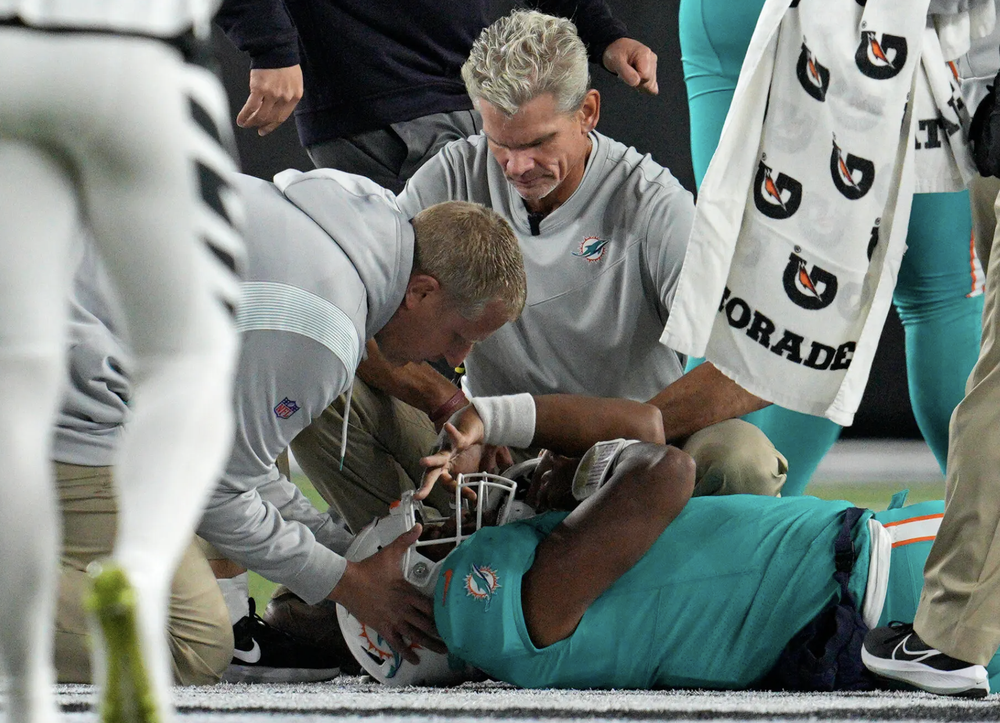

In the 2022 regular season, the NFL saw a substantial increase in concussions. According to data released by the league, there were 149 reported concussions out of a total of 271 games.
This demonstrates an 18% rise from 2021, where the league saw 126 concussions out of 272 games.
The surge came after the league saw a promising decline in the number of concussions its players endured in the previous two seasons. This rise also came after the NFL saw record low numbers during the preseason.
In the 2018 and 2019 preseasons, the NFL reported 79 concussions in each of those years. That number drastically decreased by the 2021 preseason as the NFL only saw 52 concussions.
Surprisingly, the 2022 preseason also experienced record low numbers at a report of 52 concussions. However, due to the 18% increase from 2021 to 2022 in the regular season we can see that the low trend in the preseason did not carry over into the regular season.
There has been widespread concern about the safety of the sport within the NFL and among many avid football fans. This was primarily seen through the outrage that ensued after Miami Dolphins quarterback Tua Tagvailoa experienced two back-to-back concussions in the 2022 regular season. This left many viewers and fans confused as to how Tagovailoa was so easily able to return to the game after experiencing a serious health emergency twice in one season.
“The NFL mishandled the situation,” Karson Kennedy, Howard University and former football player, said. “The NFL should be doing more to protect its players and limit concussions.”
The NFL’s protocol, which has now since been revised as of 2022, allowed for players to return to the game relatively quickly after experiencing symptoms of a concussion. In a statement released by the NFL, the league stated that a “loophole” existed within their previous protocol. This loophole allowed players who stumble or show gross motor instability to return to the game if doctors could show that something other than a head injury caused it.
As the NFL has seen a substantial number of concussions in 2022, it is likely that the backlash and public scrutiny from Tagovailoa’s situation streamlined and prompted the league to change its outdated policies.
As of 2022, the NFL changed their concussion protocols to eliminate the exception that allowed Tagovailoa to be cleared by doctors. The NFL created a list of "no-gos" symptoms or the symptoms a player must demonstrate to automatically be removed from the field. The addition of this new policy will ensure that players who exhibit severe concussion symptoms will be adequately assessed and removed from the game to ensure the players safety.
According to the NFL, any type of gross motor instability has become one of those “no-gos” symptoms. Had this policy been in effect at the time, Tagovailoa would have been removed from the game after the first concussion preventing his second one.
"If you were to remove gross motor instability as a judgment call” Dr. Allen Sills , the NFL's chief medical officer, said. “Anybody who stumbles would be ruled out."
While much evidence points to inadequate preventative measures as the main cause for the recent uptick there are other potential causes as well. The number could be higher in part because the NFL’s regular season now is longer as teams play more games per season.
The NFL has recently developed a series of new protocols. It’s also undetermined whether the increase was caused by an actual uptick in the number of head injuries suffered by players or by improvements in the detection and diagnosis of those injuries.
According to NFL officials, the medical staff performed more in-game concussion evaluations in 2022 compared to previous seasons. The number of medical timeouts and evaluations for potential concussions was also considerably higher in last year’s season.
“Players today are more likely to report their injuries now than they did in the past.” Kennedy said. “As a former player, I saw a lot of players lying about their symptoms just because they wanted to stay in the game.”
The intensity of the game and the way major organizations such as the NFL handle the safety of its players has deterred many players from pursuing professional careers in the NFL. This concern for the sport has spread to the collegiate level as many prospect players pursue other career opportunities.
“The chance of head injuries among many other injuries to other parts of the body did not seem sustainable to me in the long-term and caused me to stop pursuing a path in football. “Kennedy said.
The NFL has recognized that it’s time for the organization to prioritize the safety of their players.
“We want to drive these numbers down. We want to diagnose them with a high degree of fidelity. But we want to prevent them. We want the numbers of concussions to go down.” Sills said. “But more importantly, we want the number of head impacts to go down. Now that we can measure that, we’ll be tracking that and working very actively against it.”
Under the new protocol adopted in 2022, the 2023 preseason saw 58 reported concussions which is more than the 52 reported in the 2022 preseason.
Data on the 2023 regular season has yet to be released as the season is still in progress. With the regular season about to end soon, data will be released indicating whether the preventative measures the NFL has put in place last year will in fact work to protect the safety of its players.